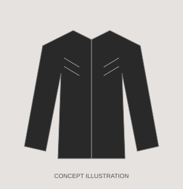
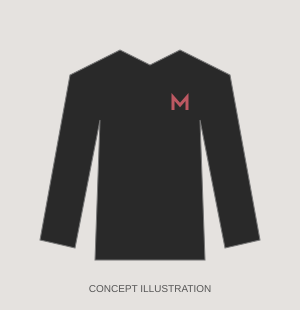
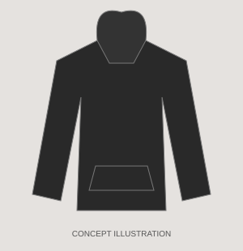
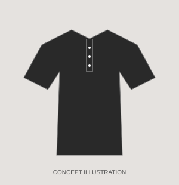

The Leather Jacket
A black racer-inspired jacket with quilted shoulders and dark red lining.
Built for the city after midnight.
Four designs that introduce the Moonlit Manhattan style. The images below are simple concept illustrations.
Showing 4 designs.

A black racer-inspired jacket with quilted shoulders and dark red lining.

A black long-sleeve shirt with a small red chest accent.

A black fleece hoodie with subtle leather accents.

A short-sleeve black henley with a button placket and tonal details.